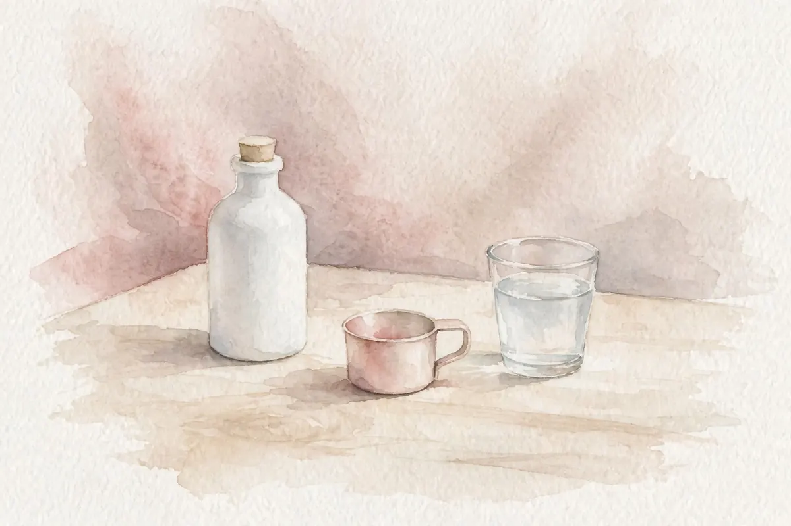

トップ ＞ インナーケア・サプリ ＞ 子ども向けサプリの表示の読み方：対象年齢と目安量の確認ポイント
子ども向けサプリの表示の読み方：対象年齢と目安量の確認ポイント

施術の仕事をしていると、お客様から「子ども向けのサプリって、大人用と何が違うんですか」と聞かれることがあります。店頭に並ぶ子ども向けタイプは、対象年齢や1日の目安量が大人用とは別に決められていることが多く、表示の読み方が少し違います。この記事では、特定の商品の話ではなく、子ども向けタイプの表示の読み方を整理します。体調や薬のことで気になる点がある場合は、医師や薬剤師などの専門家への相談が基本です。
まず「対象年齢」の欄を探す
子ども向けタイプのパッケージには、「対象年齢」の欄が書かれていることがあります。「3歳以上」「6歳以上」「小学生から」といった書き方で、年齢の区切りは商品によってさまざまです。この欄は、パッケージの表面ではなく、側面や裏面の「お召し上がり方」の近くに書かれていることもあるので、買う前に裏面まで読むのが私のやり方です。
対象年齢が書かれていないものは、「何歳から」という案内が別の欄に書かれていることがあります。「乳幼児には与えないでください」といった注意書きがあるものもあり、こうした表示は、年齢の区切りとセットで読む必要があります。家族で使うものを選ぶときは、使う子どもの年齢と、この欄を照らし合わせるのが出発点です。
目安量と「あたり」の表示をそろえて読む
子ども向けタイプの目安量は、「1日2粒」「1日1包」のように、年齢ごとに分かれて書かれていることがあります。「3〜5歳は1粒、6歳以上は2粒」といった具合に、年齢の区切りごとに量が違うものです。買う前に、使う子どもの年齢にあたる行を確認するのが基本です。
量の表示には「あたり」の前提があります。「1粒あたり」「1日分あたり」といった書き方で、同じ数字でも前提が違えば量は別物です。たとえば「1粒あたり」と「1日2粒あたり」では、比べる数字の意味が違います。私は表示を読むとき、まずこの「あたり」をそろえてから数字を見るようにしています。
目安量は、あくまで表示の目安です。量を増やせばよい、というものではありません。表示の量を守るのが基本で、量について迷ったときは、販売元の相談窓口や、かかりつけの医師・薬剤師に相談するのが確実です。
形状と飲ませ方の表示
子ども向けタイプは、粒の大きさや形状にも工夫が見られます。チュアブルタイプは、噛んで食べる形で、水なしで使える案内が書かれていることがあります。グミタイプやゼリータイプは、おやつのような感覚で使える形ですが、「1日の目安量を守る」という案内とセットで読む必要があります。
粒タイプのものは、「水と一緒に飲む」「噛まずに飲む」といった案内が書かれていることがあります。子どもが粒を飲みにくい場合は、形状そのものが合っていない可能性もあるので、表示の案内と、子どもの様子を照らし合わせて考えることになります。味や香りの表示も、続けやすさの判断材料になりますが、味の好みは子どもによって違うので、まずは少量のタイプから試す人もいます。
家族で共有しない保管の工夫
子ども向けタイプと大人用のものを、同じ場所に置いている家庭は多いと思います。私が気をつけているのは、子ども向けと大人用を分けて置くことです。容器の形が似ているものもあり、間違えて手に取ることがあるからです。置き場所を分けるだけでも、取り違えは減らせます。
保管の表示も、確認ポイントです。「直射日光を避けて保管する」「子どもの手の届かない場所に保管する」といった案内が書かれていることがあります。子どもの手の届く場所に置かない、というのは、大人用のサプリでも同じ注意書きですが、子ども向けタイプでは特に意識したい点です。
開封後の期限の目安も、表示で確認しておきたい欄です。「開封後はなるべく早めに使う」といった案内が書かれていることがあり、開封した日を容器に書いておくと、使い切る時期の目安になります。迷ったときは、まず表示通りの対象年齢と目安量を確認し、気になる点があれば、販売元の相談窓口や専門家に相談してください。この記事は表示の読み方の案内であり、商品ごとに表示がある場合は、そちらが優先です。
セラフィナ「子ども向けは、対象年齢と目安量がまず大事なんだね。裏面まで読んで、年齢に合う行を確認するよ」